Make robots more versatile by enabling them to learn
State-of-the-art learning algorithms require vast amounts of data
Real-world data is very expensive
Physics simulators generate diverse data at low cost
Exploration in simulation is safe
Mind the reality gap
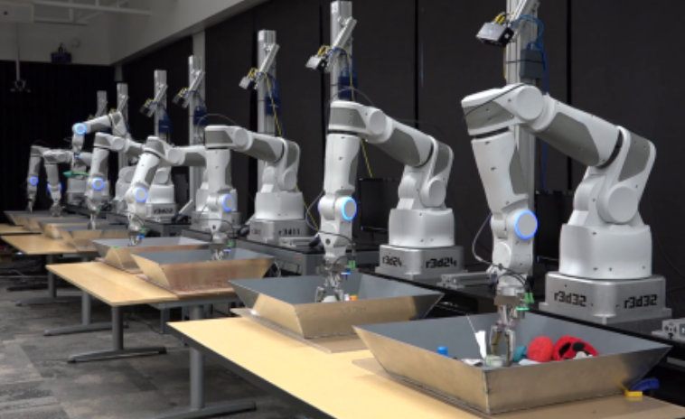
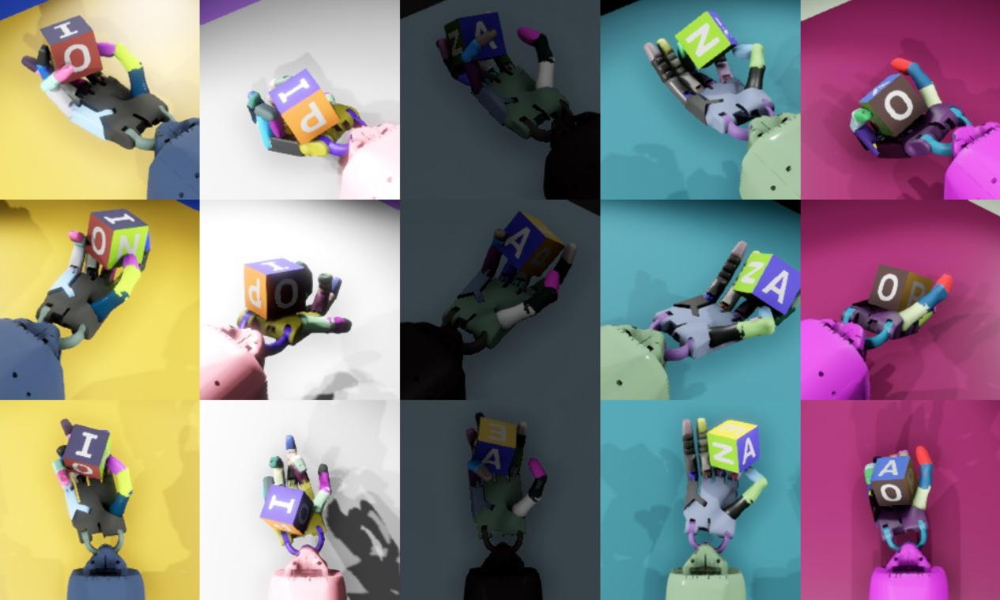
Time-discrete stochastic dynamical system
\[ s_{t+1} \sim \mathcal{P}_\hldomparam \left(s_{t+1} \big| s_t, a_t \right),\quad s_0 \sim \mu_\hldomparam \left( s_0 \right),\quad a_t \sim \pi_{\theta} \left( a_t | s_t \right),\quad \hldomparam \sim p \left( \hldomparam \right) \]Expected return for one domain
Augmentation of the standard reinforcement learning objective
\[ \theta^\star = \arg\!\max_{\theta\in\Theta} \ \mathbb{E}_{\hldomparam \sim p(\hldomparam)} \left[ \mathbb{E}_{\tau \sim p(\tau)} \left[ J(\theta, \hldomparam) \right] \right] \]Does not specify how many simulation instances to run
Misses a well-motivated stopping condition
Requires a hand-tuned domain parameter distribution $p(\xi)$
Does not update $p(\xi)$
Restricts $p(\xi)$ to parametric probability distributions
part 1
part 1
part 2 & 3
part 2 & 3
part 3
When randomizing, sample-based optimization is optimistically biased [Hobbs and Hepenstal, Water Resour. Res., 1989]
We define the Simulation Optimization Bias (SOB)
as a measure of performance loss when transferring a policy to a different domain from the same distribution
Muratore et al., "Assessing Transferability from Simulation to Reality for Reinforcement Learning",
IEEE Transactions on Pattern Analysis and Machine Intelligence, 2021
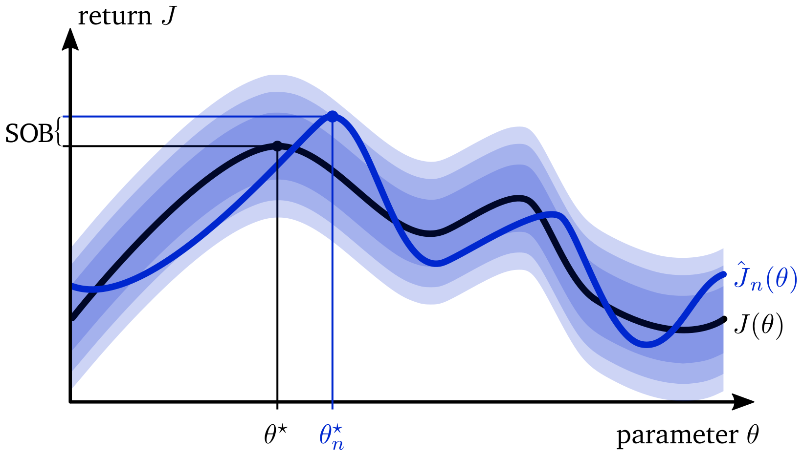
Computing the SOB is intractable due to $ \mathbb{E}_{\xi \sim p(\xi)}[ \max_{\hat{\theta} \in \Theta} \cdot ]$
But it can be estimated from the optimality gap [Mak et al., Oper. Res. Lett., 1999]
which itself needs to be estimated form samples
\[ \hat{G_n}(\theta^c) = \max_{\theta \in \Theta} \hat{J_n}(\theta) - \hat{J_n}(\theta^c) \ge G(\theta^c) \]The optimality gap decreases monotonically in expectation with increasing sample size of the domain parameters $\xi$
\[ \begin{align} \mathbb{E}_\xi \left[\hat{J}_{n+1}(\theta^\star_{n+1})\right] &= \mathbb{E}_\xi \left[ \max_{\theta \in \Theta} \frac{1}{n+1} \sum_{i=1}^{n+1} J(\theta,\xi_i) \right] \\ &= \mathbb{E}_\xi \left[ \max_{\theta \in \Theta} \frac{1}{1+n} \sum_{i=1}^{n+1} \frac{1}{n} \sum_{j=1,j\neq i}^{n+1} J(\theta, \xi_j) \right]\\ &\le \mathbb{E}_\xi \left[ \frac{1}{1+n} \sum_{i=1}^{n+1} \max_{\theta \in \Theta} \frac{1}{n} \sum_{j=1,j\neq i}^{n+1} J(\theta, \xi_j) \right]\\ &= \frac{1}{1+n} \sum_{i=1}^{n+1} \mathbb{E}_\xi \left[ \max_{\theta \in \Theta} \hat{J_n}(\theta_{n}) \right]= \mathbb{E}_\xi \left[ \hat{J_n}(\theta^\star_{n}) \right] \end{align} \]The SOB can be expressed as the expectation of the difference between the approximated and the true optimality gap
\[ \begin{align} \mathbb{E}_\xi \left[ \hat{G_n}(\theta^c) \right] &- G(\theta^c) \ge 0\\ \mathbb{E}_\xi \left[ \max_{\theta \in \Theta} \hat{J_n}(\theta) - \hat{J_n}(\theta^c) \right] &- \left( \max_{\theta \in \Theta} \mathbb{E}_\xi \left[ J(\theta, \xi) \right] - \mathbb{E}_\xi \left[ J(\theta^c, \xi) \right] \right) \ge 0\\ \mathbb{E}_\xi \left[ \max_{\theta \in \Theta} \hat{J_n}(\theta) \right] \class{famurabrightgreen}{- \mathbb{E}_\xi \left[ \hat{J_n}(\theta^c) \right]} &- \max_{\theta \in \Theta} \mathbb{E}_\xi \left[ J(\theta, \xi) \right] \class{famurabrightgreen}{+ \mathbb{E}_\xi \left[ J(\theta^c, \xi) \right]} \ge 0\\ \mathbb{E}_\xi \left[ \max_{\theta \in \Theta} \hat{J_n}(\theta) \right] &- \max_{\theta \in \Theta} \mathbb{E}_\xi \left[ J(\theta, \xi) \right] = \class{famurablue}{\mathbb{b} \left[ \hat{J_n}(\theta^\star_n) \right]} \ge 0\\ \end{align} \]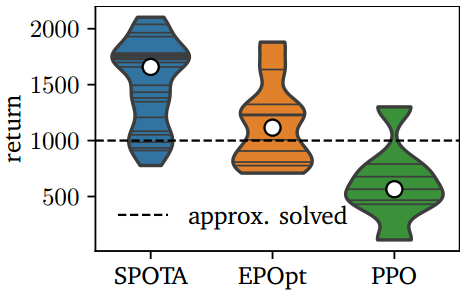
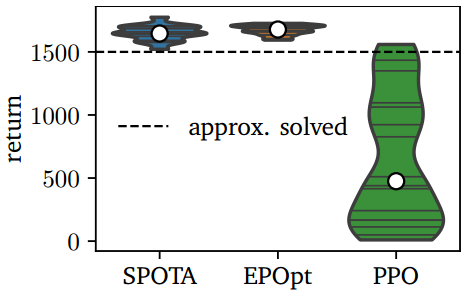
Ball balancing
Cart-pole stabilization
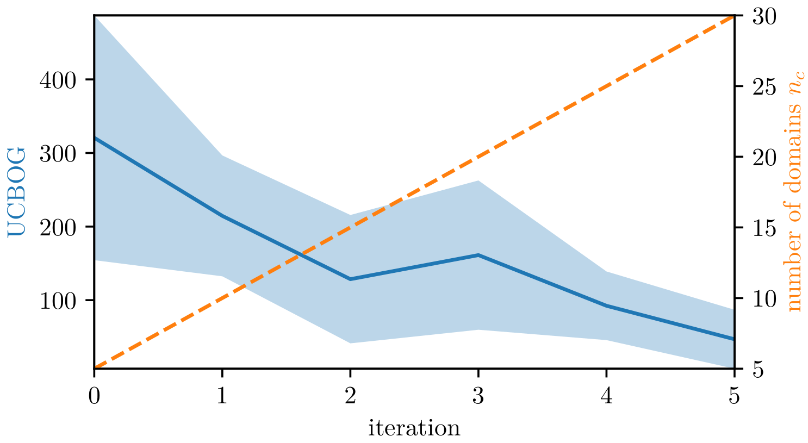
Bilevel optimization problem
Muratore et al., "Data-Efficient Domain Randomization with Bayesian Optimization",
IEEE Robotics and Automation Letters / International Conference on Robotics and
Automation, 2021
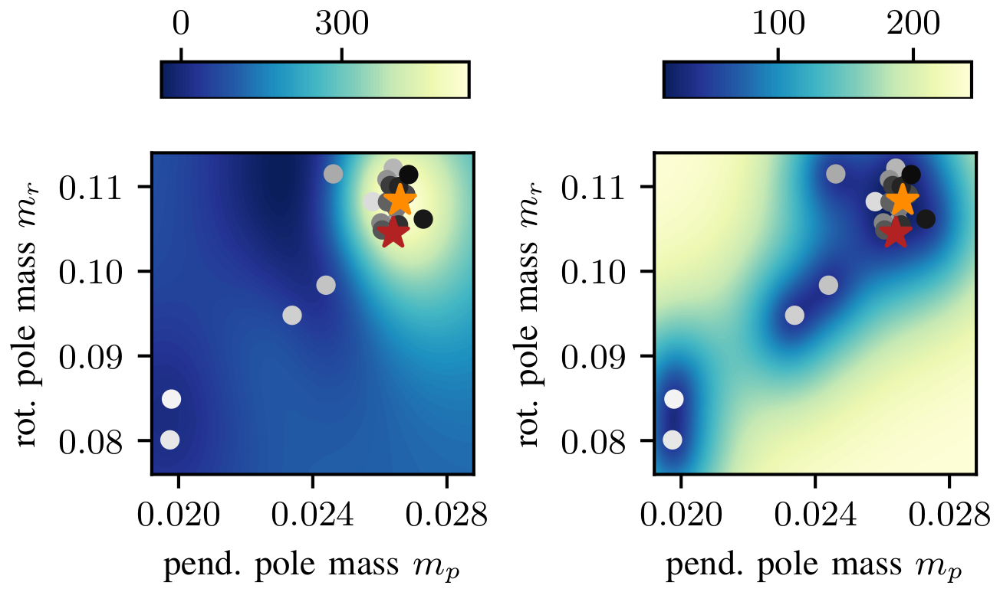
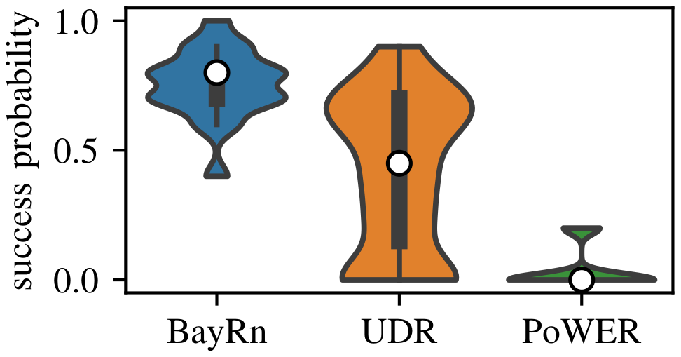
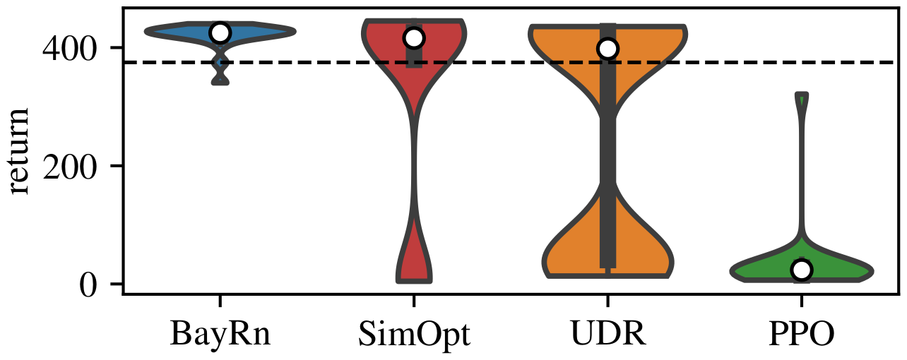
Ball-in-a-cup
Swing-up and balance
Muratore et al., "Neural Posterior Domain Randomization", Conference on Robot Learning, 2021 (accepted)
Muratore et al., "Neural Posterior Domain Randomization", Conference on Robot Learning, 2021 (accepted)
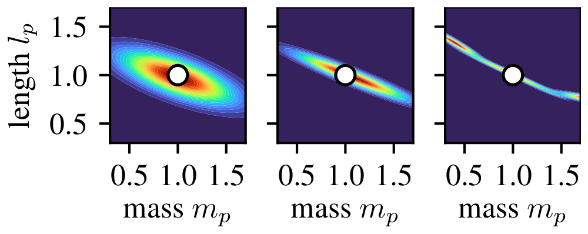
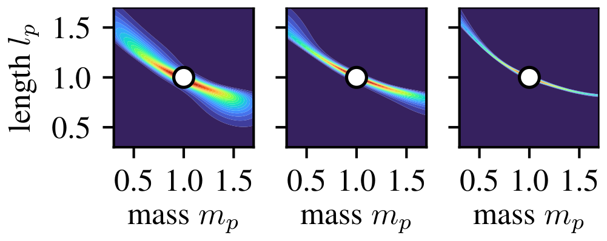
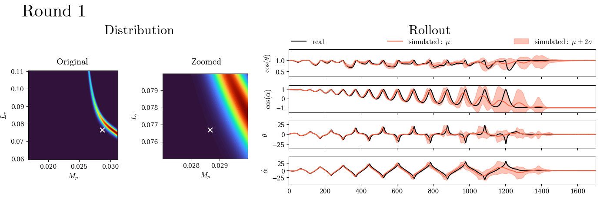
Learning from randomized simulations is a promising and scalable approach for bringing (deep) learning methods to robotics, especially if the randomization scheme is adaptive and physically grounded.
Does not specify how many simulation instances to run ← SPOTA
Misses a well-motivated stopping condition ← SPOTA & BayRn
Requires a hand-tuned domain parameter distribution $p(\xi)$ ← BayRn & NPDR
Does not update $p(\xi)$ ← BayRn & NPDR
Restricts $p(\xi)$ to parametric probability distributions ← NPDR
Domain randomization methods inherit the low repeatability from their subroutines
They have mostly been evaluated only on a restrict problem class (continuous control)
Automated generation of simulations (e.g., kinematic trees) from video data (i.e., real-to-sim-to-real)
Accounting for the cost of information collection (i.e., optimal stopping / bounded optimality)
Inferring from data which physical phenomena the simulator misses (e.g., hypothesis testing)
Estimating the simulation optimization bias
SPOTA (static randomization)
Stabilization & Ball balancing
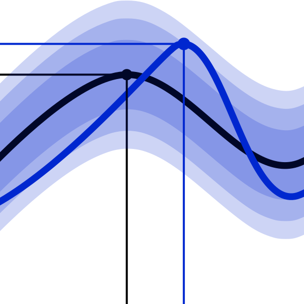
Adapting the Distribution over Simulators Based on Limited Data
BayRn (adaptive randomization)
Ball-in-a-cup & Swing-up and balance
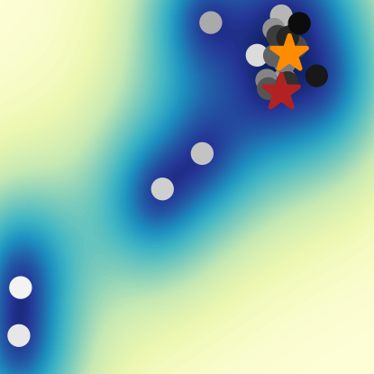
Inferring the Posterior over Simulators with Minimal Assumptions
NPDR (adaptive randomization)
Mini-golf & Swing-up and balance
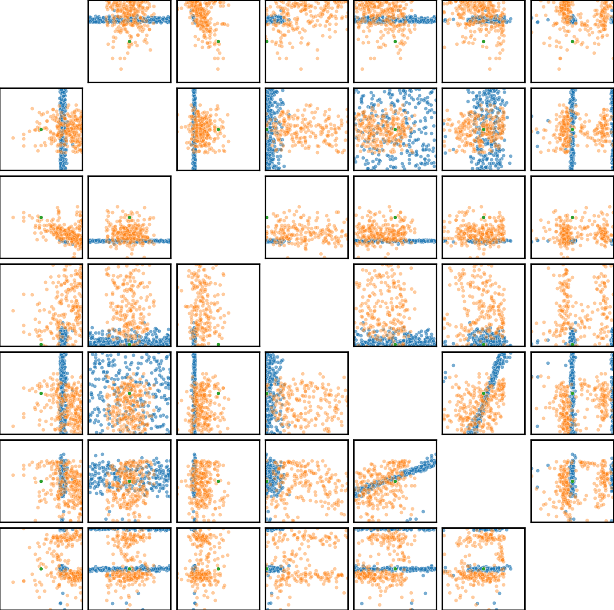
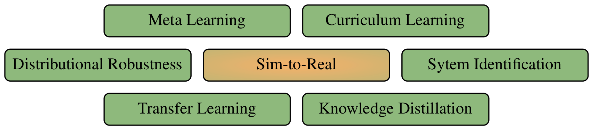
The key idea behind curriculum learning is to increase the sample efficiency by scheduling the training process such that the agent first encounters ‘easier’ tasks and gradually progresses to ‘harder’ ones.
Curriculum learning does not aim at finding solutions robust to model uncertainty.
Curriculum learning methods may require a target distribution which is not defined in the domain randomization setting.
The goal of meta learning is to find a suitable set of initial weights, which when updated generalizes well to a new task.
Domain randomization on the other hand strives to directly solve a single task, generalizing over domain instances.
Transfer learning covers a wide range of machine learning research, aiming at using knowledge leaned in the source domain to solve a task in the target domain.
Domain adaptation methods are in general suitable to tackle sim-to-real problems.
The keyword ‘sim-to-real’ specifically concerns regression and control problems where the focus lies on overcoming the mismatch between simulation and reality.
In the context of RL, knowledge distillation techniques can be used to compress the learned behavior of one or more teachers into a single student
This idea can be straightforwardly applied to sim-to-real robot learning, where the teachers can be policies optimal for specific domain instances.
Knowledge distillation has mainly been applied to multitask learning.
The goal of system identification is to find the set of model parameters which fit the observed data best, typically by minimizing the prediction-dependent loss such as the mean-squared error.
Sim-to-real approaches can incorporate system identification, but does not necessarily do so.
Distributional robust optimization is a framework to find the worst-case probabilistic model from a so-called ambiguity set, and subsequently set a policy which acts optimally in this worst case
Under the lens of domain randomization, the ambiguity set closely relates to the distribution over domain parameters.
The scenario approach is a robust optimization technique, where a solution is obtained by only looking at a random sample of the chance constraints.
The closeness of the relation depends on the formulation of the constraints.
Unverified theorem: one can frame all state-of-the-art domain randomization methods as scenario optimization approach
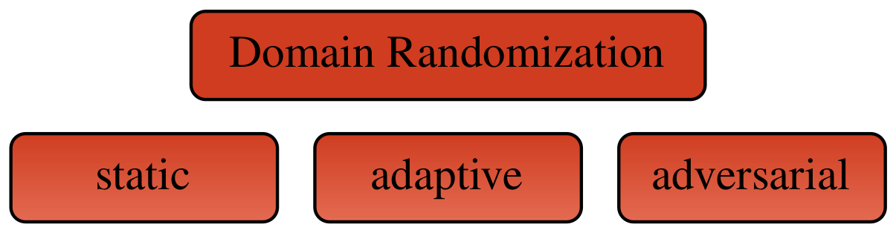
The methods presented in this thesis play well with likely future developments
Hardware acceleration for learning from simulations
Certification of machine learning models in simulation
He wrote about the 'reality gap' three decades ago, describing most of the problems encountered today [Brooks, ECAL, 1992]
He argues that researchers tend to solve problems in simulations which do not occur in the physical world (e.g., deadlocks in path planning)
He suggests behavioral programs that are like reflexes to match the real-time constraints (and be learned by genetic algorithms)
He raises the concern that the data delivered by sensors are not direct descriptions of the world as objects and their relationships
Research on a general-purpose probabilistic physics simulator with automated hypothesis generation for missing phenomena
Missing effects (e.g., stick-slip) are typically the bottleneck for sim-to-real transferability
Tracking the likelihood of physics parameters allows to use efficient (Bayesian) methods (i.e., variational inference)